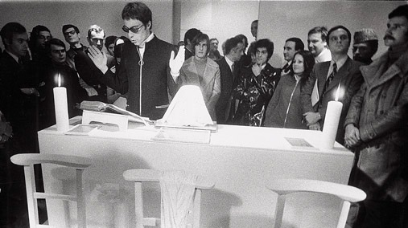
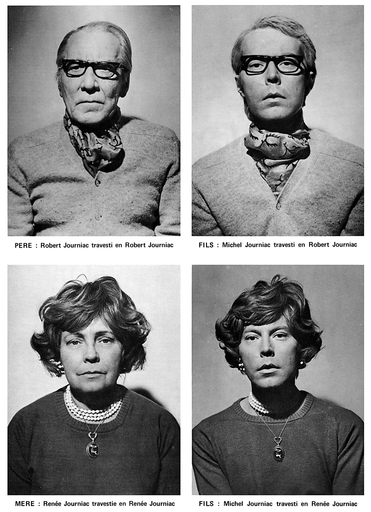

Michel Journiac est un artiste français né en 1935 à Paris et décédé en 1995. Il est très connu pour avoir pratiqué le Body Art. Il est entré au Séminaire afin d'échapper aux problèmes liés à son homosexualité, mais abandonne à l'âge de 27 ans, puis se dédie totalement à son art. Il a réalisé de nombreuses séries photographiques, performances, rituels, souvent en utilisant son propre sang. Il aborde notamment les thématiques suivantes: désir, souffrance, sexualité, genres, mort.

La première oeuvre à laquelle on va s'intéresser se nomme “Messe pour un Corps” et a été réalisée en 1969. Il s'agit d'une cérémonie reprenant la messe traditionnelle, mais à la place de donner du pain, il donne du boudin fabriqué avec son propre sang (il donne d'ailleurs la recette).
Véritable processus de mimétisme conscient, Michel Journiac ne se positionne pas contre la religion. Il nous dit:
“ L’Homme se nourrissant de lui-même et des hommes se nourrissant de l’artiste. Cette nourriture corporelle est plus appétissante et plus « énergétique » qu’une nourriture « spirituelle » ”
Le deuxième travail que nous allons voir se nomme “Hommage à Freud”. Réalisé en 1972, on comprend que ce mimétisme est autant formel que comportemental. En effet, le fils Journiac se travesti en ses parents, à l'instar d'un enfant tentant d'enfiler une des chaussures démesurée du père, ou le talon aiguille de la mère. Mais cela va plus loin, les parents sont travesis en eux-même, comme s'ils revêtaient un rôle qui n'est pas premièrement leur.
